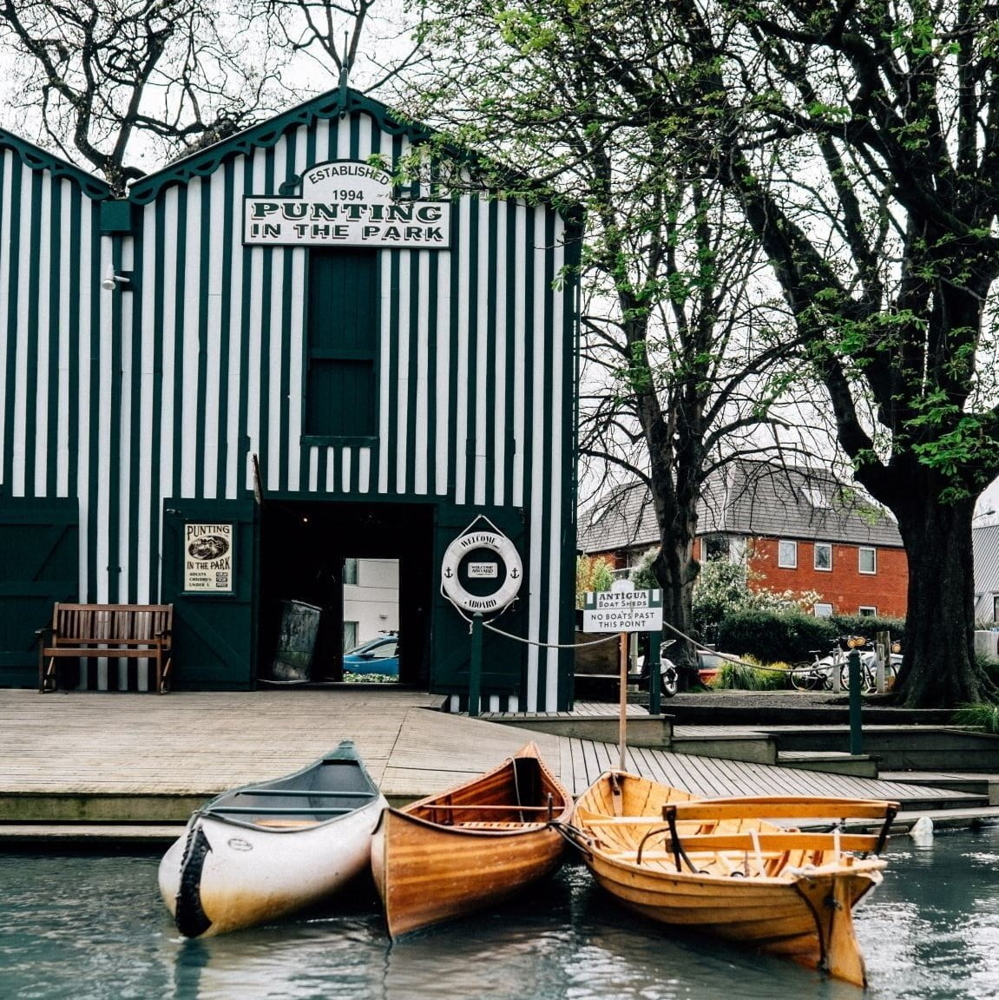
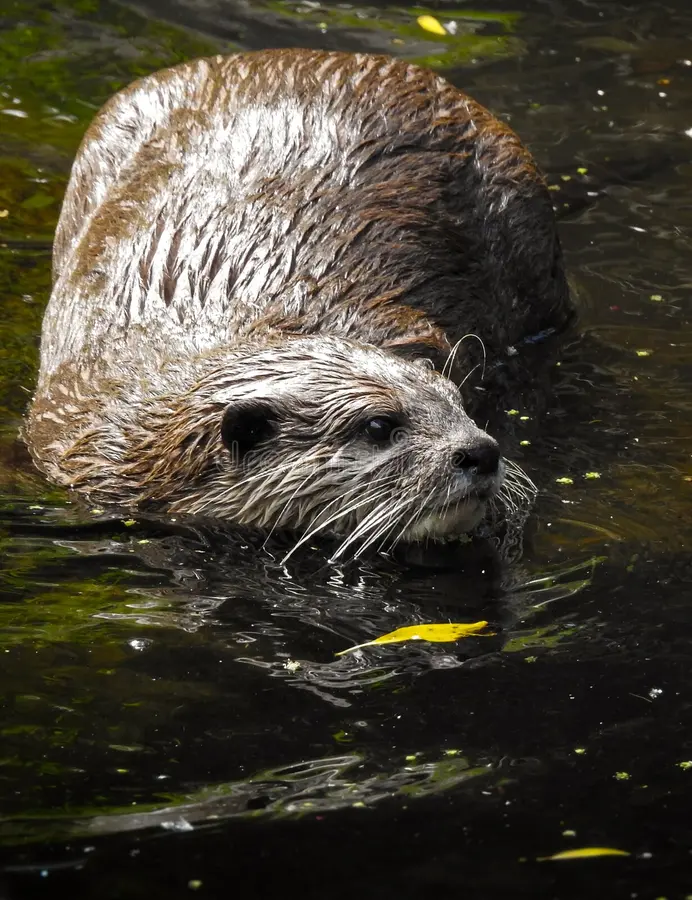

Saddle up to explore the beautiful hills of flock hill.Enjoy treks suited to beginners or experienced riders all with spectacular views. Ride with experienced instructors and with a horse suitable for all levels! Explore more of flock hills experiences such as farm tours and station tours through the link on the right. Vist Now!
Kyaka , peddle boat, row boat or canoe throw Christchurch's famous Avon River (Ōtākaro) Prices range from $23-46. Suitable for beginners since the lake is only up to knee height just in case you fall in! See different duck species on your ride down the river including the paradise duck and the mallard. After your boat ride head into the boat shed cafe for a delicious meal or drink! Vist Now!

Come visit willowbank wildlife reserve a family owned wildlife park . Only 10 minutes from the airport, you can feed a selection of native and non native animals. One of the only zoos where you can get up and close with the animals with general admission. Tickets cost $36.50 for adults , 13 for children under 12 and kids under 5 are free! Vist Now!